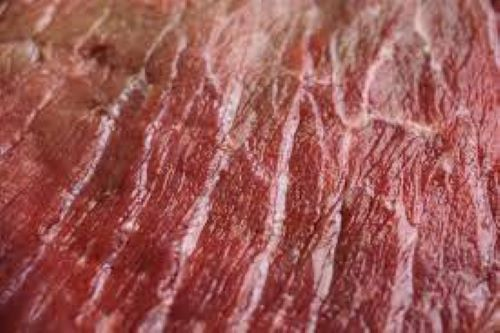
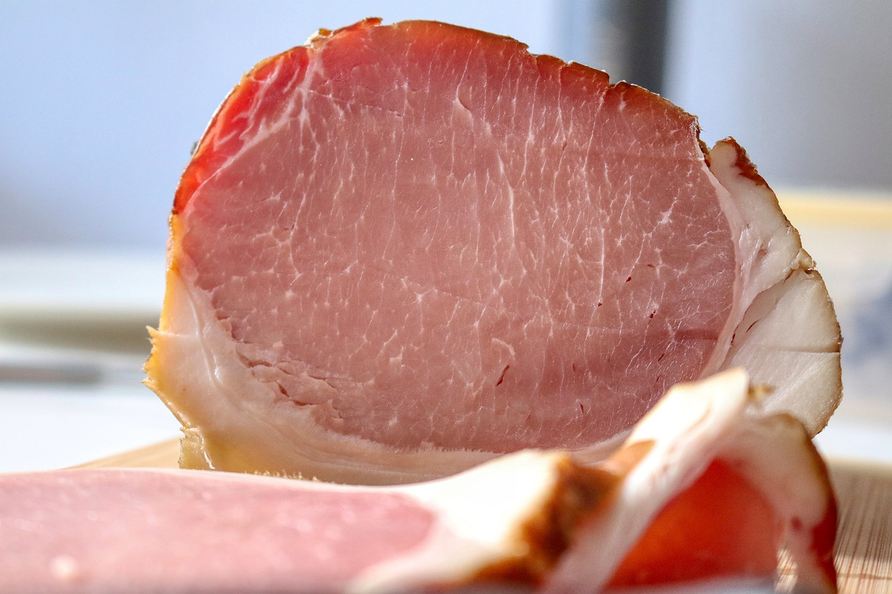

Methodology and Results
Methodology |
|
Due to the unique way that meat feels in the mouth there are certain scientific techniques that are required to replicate or at least attempt to replicate this texture with plant proteins and fats. Luckily for the sake of the environment (and your physical health), plant proteins have a wide spectrum of functionalities such as their ability to emulsify, stick together and hold essential amino acids that real meat does not (McClements, Grossman, 2021). The most common type of plant proteins used in the production of plant-based meats are pea (including pulses), wheat, and soy protein due to their wide availability and low production costs. For there to be an increased level of nutrients such as different amino acids, proteins from rice and mung beans are also included in production (Sha, Xiong, 2020). Plant fats such as coconut and cocao oils are extracted and added to the protein mixture in clumps to mimic the appearance of blended animal fat in ground beef burgers and enhance the mouthfeel of the product. To take plant-based meat to the next level, specifically products trying to imitate beef; a heme protein extracted from the roots of certain plants called leghemoglobin is used to give the red colour and even gives off a meat-like aroma when cooked, among other meaty characteristics (McClements, Grossman, 2021). Products that don’t use this compound often use betalain, the natural pigment in beetroot to give a red colour. |
|
Results |
|
When the plant-based meat industry takes off the implications will be huge. It will provide many jobs including those for the farming of the crops associated with production of these products and it will lead to a general improvement of the impact of the agricultural sector. This will be due to a decrease in greenhouse gas emissions such as the extremely potent methane, it has been shown that beef production creates 60 times more greenhouse gases than the production of peas does (Poore, Nemecek, 2019). The massive reduction in water usage during the production of plant-based meats is also extremely beneficial, especially when considering the drought issues in Africa and Australia. Unfortunately, according to Michel et al. (2021) meat alternatives are still publicly viewed negatively. For now, the best thing producers of plant-based meats can do is continue to work on the taste and appearance of their product whilst making the pricing competitive (Michel et al., 2021). |
|
1 / 4

The texture must be chewy, fatty, slippery in common beef and pork products.
It must be able to emulsify fats and keep its shape like egg whites and yolks.
It must be in string-like and stretchy layers like in fish or chicken products.
2 / 4

The smells entices individuals to eat meat and also affects the taste of meat.
Smells are responsible for about 80% of the five main savory sensations.
With over a thousand different kinds of chemical compounds responsible for the
cooking scent of meat, it is essential to mimic these scents to properly match what
makes meat so popular.
3 / 4
Taste is a major component of the consumption of meat products. Each meat product
has a particular taste depending on the species used to acquire the meat.
4 / 4

Matching the look of meat, including colour and physical characteristics such
as ligaments, fat, muscle tissue are additional components to the successful
consumption of meat products.
|
-